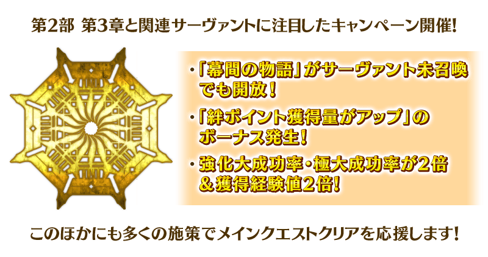
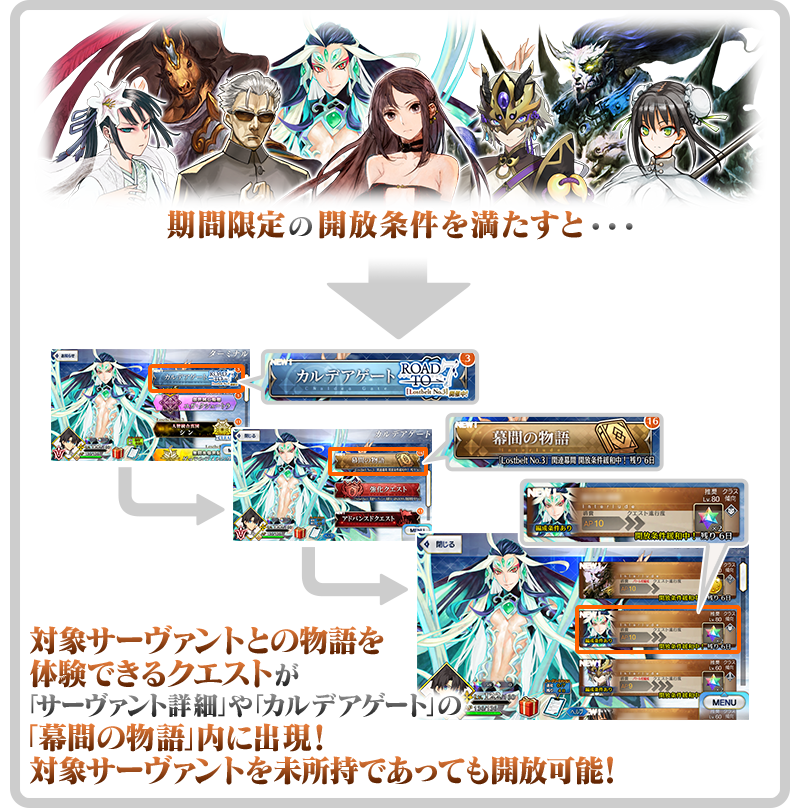
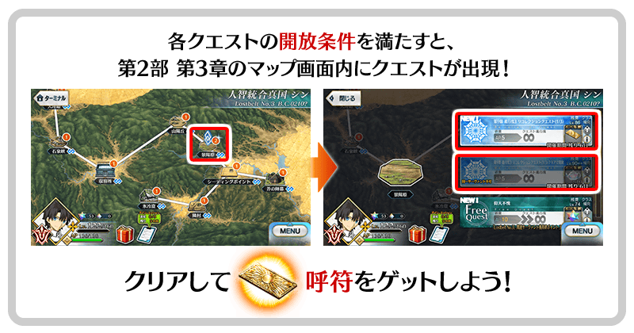
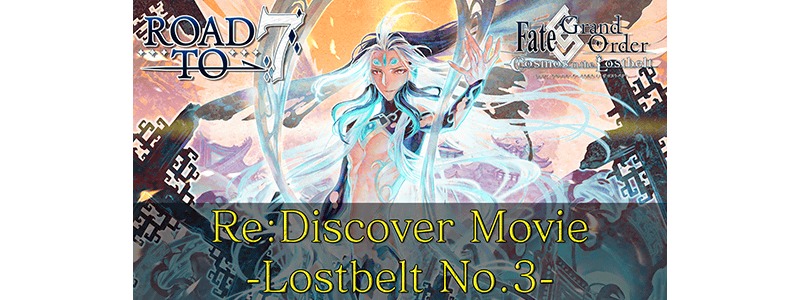
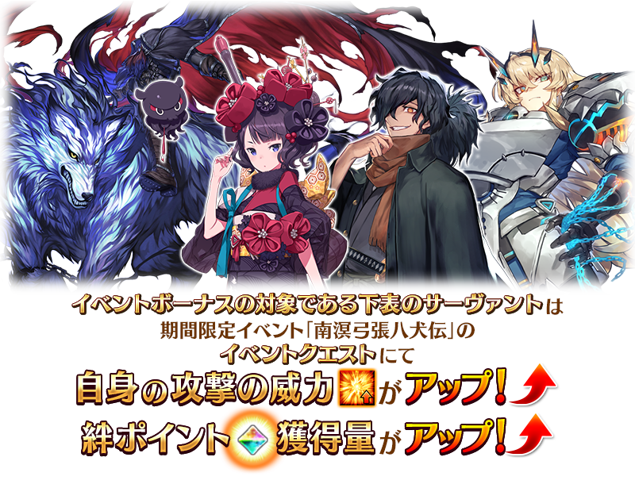
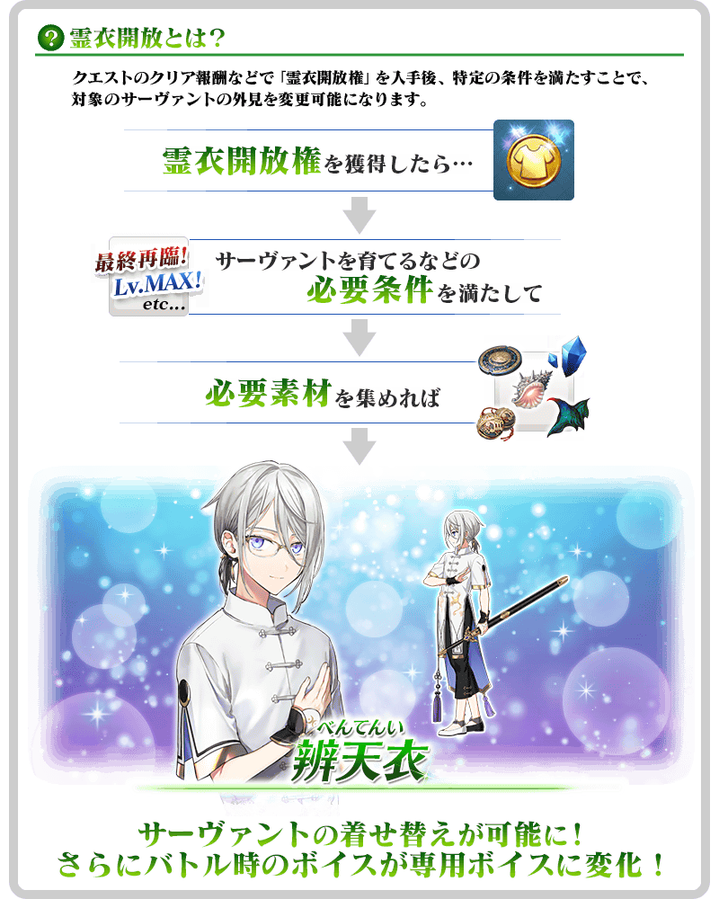
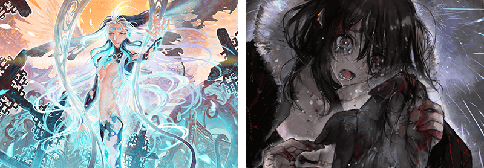
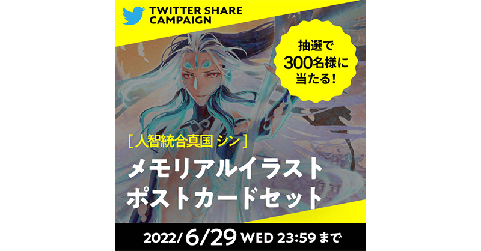

為了與更多的御主迎接預定2022年開幕的第2部 第7章而開始的宣傳活動「Road to 7」。舉辦其第3彈「Road to 7 [Lostbelt No.3]」！
靠各式各樣的措施聲援通過第2部 第3章「Lostbelt No.3 人智統合真國 SIN 紅之月下美人」！

另外，本次也配信讓已經通過第2部 第3章「Lostbelt No.3 人智統合真國 SIN 紅之月下美人」回顧印象深刻的關卡「追憶關卡」、超高難易度的「超級追憶關卡」！
對能力有自信的御主請以通過超高難易度關卡為目標，務必試著挑戰！
預定2022年6月下旬舉辦的期間限定活動「南溟弓張八犬傳」的參加條件也預定為通過第2部 第3章「Lostbelt No.3 人智統合真國 SIN 紅之月下美人」，藉此機會以通過為目標吧！
◆宣傳活動舉辦期間◆
2022年6月22日(三) 17:00～6月29日(三) 11:59
※本頁面皆為開發中圖片。會有與實際圖片相異的情況。 ※在2018年12月31日(二) 23:00以後新配信的主線故事及期間限定活動、一部份關卡、宣傳活動及召喚中，會顯示隱藏真名的對象從者真名。
【「Road to 7 [Lostbelt No.3]」獨有的宣傳活動】
■「Lostbelt No.3」關聯從者的「幕間物語」以期間限定就算未召喚從者也開放！
■「Lostbelt No.3」以期間限定舉辦追憶關卡！
■在程式起動時播放「Lostbelt No.3」特別影像！
■以期間限定「Lostbelt No.3」關聯從者以每日交替在支援從者登場！
■追加「Lostbelt No.3」通過參加條件的下次活動加成篩選器！
【主線故事進行＆從者培育的機會】
■一部份自由關卡的初次通過為止的消耗AP1/2！
■關聯從者的「Lostbelt No.3」自由關卡的絆點數獲得量以期間限定提升！
■關聯從者的強化關卡與幕間物語的消耗AP以期間限定1/2！
■關聯從者的強化大成功率・極大成功率以期間限定2倍！並且獲得經驗值也2倍！
■關聯從者的友情點數獲得量以期間限定2倍！
【達文西工房充實】
■蘭陵王的靈衣開放權在達文西工房的「靈衣縫製」追加！
【修改(全螢幕顯示對應)】
■蘭陵王的寶具演出對應全螢幕顯示！
【「Road to 7」最新情報】
■公開新繪製的第2部 第3章留有印象名場景的插圖！
■投稿第2部 第3章的感想就贈送回憶插圖的明信片！
■接觸第2部 第3章故事的談話節目「Spotlight Lostbelt No.3」
第2部 第3章「Lostbelt No.3 人智統合真國 SIN 紅之月下美人」關聯從者的「幕間物語」，以期間限定變成「就算未持有對象從者也能開放」！
「幕間物語」的開放條件也與平常時的開放條件不同，會變成期間限定的特別開放條件。
務必藉此機會通過對象從者的「幕間物語」吧！
◆舉辦期間◆
2022年6月22日(三) 17:00～6月29日(三) 11:59
※對象從者有多個「幕間物語」的情況，全部的幕間物語皆為對象。 ※關卡通過時的報酬內容不會變化。 ※在有編制限制等需持有從者為前提的關卡中，未持有對象從者的情況，在隊伍編制時變得能選擇NPC。
【對象從者・幕間物語】
| 對象 從者 |
對象 「幕間物語」 |
通過報酬 | 期間限定開放條件 | |
|---|---|---|---|---|
| ★5(SSR) 李書文(Assassin) |
第1節 |

|
聖晶石 2個 | 通過特異點F |
| 第2節 | 寶具強化 | 通過幕間第1節 | ||
| ★5(SSR) 項羽 |
第1節 |

|
技能強化 | 通過Lostbelt No.3 |
| ★5(SSR) 始皇帝 |
第1節 |
|
聖晶石 2個 | 通過Lostbelt No.3 |
| ★4(SR) 蘭陵王 |
第1節 |
|
聖晶石 2個 | 通過特異點F |
| ★4(SR) 秦良玉 |
第1節 |
|
聖晶石 2個 | 通過特異點F |
| ★4(SR) 虞美人(Assassin) |
第1節 |
|
聖晶石 2個 | 通過Lostbelt No.3 |
| ★3(R) 赤兔馬 |
第1節 |
|
聖晶石 2個 | 通過特異點F |
| ★3(R) 荊軻 |
第1節 |
|
聖晶石 2個 | 通過特異點F |
※在滿足期間限定的開放條件後通過「幕間物語」時未持有對象從者的情況，在入手對象從者的時間點會反映強化內容。 ※對象從者的「幕間物語」就算在未持有的狀態下通過的情況，會計算在Extra任務的進行度。 ※對象從者的「幕間物語」，在未通過的狀態超過舉辦期間的情況，對象從者的「幕間物語」會回到未開放，切換成平常的開放條件。 ※關卡通過時的報酬內容沒有變化。 ※已經通過對象從者的幕間物語的情況，無法再度遊玩。

通過第2部 第3章「Lostbelt No.3 人智統合真國 SIN 紅之月下美人」的話才能挑戰，舉辦從第2部 第3章「Lostbelt No.3 人智統合真國 SIN 紅之月下美人」之中集合留有印象戰鬥的「追憶關卡」！

「追憶關卡」中，由於在戰鬥的前後也會做為文字冒險部份播放對話場景，可靠戰鬥與文字冒險部份雙方來回顧第2部 第3章「Lostbelt No.3 人智統合真國 SIN 紅之月下美人」。
◆調整難易度的「超級追憶關卡」也登場！◆
朝向上級者而調整「追憶關卡」的超高難易度的「超級追憶關卡」也登場！
「超級追憶關卡」由於是通過該「追憶關卡」後才能挑戰，對能力有自信的御主請務必試著挑戰！
通過「超級追憶關卡」的話能入手星見茶壺！
◆「星見茶壺」使用期限◆
2022年6月22日(三) 17:00～8月31日(三) 11:59
※「星見茶壺」有使用期限，超過使用期限「星見茶壺」會消失，敬請注意。
◆舉辦期間◆
2022年6月22日(三) 17:00～6月29日(三) 11:59
「追憶關卡」及「超級追憶關卡」就算通過後也不會消失，可以變更從者和概念禮裝的組合等後無限次挑戰。 ※關卡通過報酬、戰利品、御主EXP、魔術禮裝EXP、絆點數只可在初次通過時獲得。
◆追憶關卡一覧◆
| 關卡名 | 開放條件 | 通過報酬 | |
|---|---|---|---|
| 第9節 進行度3 追憶關卡(1/3) | 通過第2部 第3章「Lostbelt No.3 人智統合真國 SIN 紅之月下美人」 |

|
呼符1張 |
| 第9節 進行度3 超級追憶關卡(1/3) | 通過第9節 進行度3 追憶關卡(1/3) |

|
星見茶壺10個 |
| 第15節 進行度3 追憶關卡(2/3) | 通過第9節 進行度3 追憶關卡(1/3) |
|
呼符1張 |
| 第15節 進行度3 超級追憶關卡(2/3) | 通過第15節 進行度3 追憶關卡(2/3) |
|
星見茶壺10個 |
| 第16節 進行度2 追憶關卡(3/3) | 通過第15節 進行度3 追憶關卡(2/3) |
|
呼符1張 |
| 第16節 進行度2 超級追憶關卡(3/3) | 通過第16節 進行度2 追憶關卡(3/3) |
|
星見茶壺10個 |
自2022年6月22日(三) 17:00，在最初啟動程式時會自動播放第2部 第3章「Lostbelt No.3 人智統合真國 SIN 紅之月下美人」的特別影像「Re:Discover Movie Lostbelt No.3」。 ※特別影像「Re:Discover Movie Lostbelt No.3」會登錄到個人空間(マイルーム)的圖鑑(マテリアル)，在「Road to 7 [Lostbelt No.3]」的宣傳活動期間結束後刪除。

◆配信期間◆
2022年6月22日(三) 17:00～6月29日(三) 11:59
特別影像「Re:Discover Movie Lostbelt No.3」在配信期間內初次啟動程式時會自動播放。
特別影像「Re:Discover Movie Lostbelt No.3」包含第2部 第3章的一部份劇透。關於尚未通過到第2部 第3章的玩家，敬請見諒包含一部份劇透。
※未經權利人同意，禁止收錄在本篇內使用的圖片・聲音・影片後公開。 ※進行無斷轉載・分享至影片網站等的情況，會有追究法律責任的可能性。 ※本影片根據使用裝置的音量設定會有一部份演出以較大音量播放的情況。請先事前確認使用裝置的音量來享受。 ※使用行動網路的情況，敬請注意流量限制。
第2部 第3章「Lostbelt No.3 人智統合真國 SIN 紅之月下美人」8位關聯從者，會做為第2部 第3章「Lostbelt No.3 人智統合真國 SIN 紅之月下美人」自由關卡的支援從者以每日交替登場！
藉此機會享受在意從者的戰鬥動作和語音吧！
◆舉辦期間◆
2022年6月22日(三) 17:00～6月29日(三) 11:59
【每日交替時間表】
| 登場期間 | 每日交替支援從者 |
|---|---|
|
2022年6月22日(三) 17:00～ 6月23日(四) 16:59 |
★5(SSR)始皇帝 |
|
2022年6月23日(四) 17:00～ 6月24日(五) 16:59 |
★4(SR)虞美人(Assassin) |
|
2022年6月24日(五) 17:00～ 6月25日(六) 16:59 |
★5(SSR)項羽 |
|
2022年6月25日(六) 17:00～ 6月26日(日) 16:59 |
★4(SR)秦良玉 |
|
2022年6月26日(日) 17:00～ 6月27日(一) 16:59 |
★5(SSR)李書文(Assassin) |
|
2022年6月27日(一) 17:00～ 6月28日(二) 16:59 |
★4(SR)蘭陵王 |
|
2022年6月28日(二) 17:00～ 6月29日(三) 11:59 |
★3(R)赤兔馬 ★3(R)荊軻 |
期間限定活動「南溟弓張八犬傳」的期間中，一部份的從者及Archer職階從者在活動關卡中會得到「自身的攻擊的威力提升」與「絆點數獲得量提升」的加成！
※活動加成的效果量因從者而異。

【活動加成的對象從者】
| 職階 | 稀有度 | 從者名 |
|---|---|---|
| Saber | ★★★★ | 巴格斯特(妖精騎士高文) |
| Archer | 所有的Archer職階從者 | |
| Assassin | ★★★ | 岡田以藏 |
| Avenger | ★★★★ | 海森・羅伯(新宿的Avenger) |
| Foreigner | ★★★★★ | 葛飾北齋 |
※「★4(SR)巴格斯特(妖精騎士高文)」是「妖精騎士高文」靈基再臨到第2階段後名稱變成「巴格斯特」。 ※就算成為對象從者也會有未在本活動的主線劇本登場的情況。 ※自6月22日(三) 17:00，在從者選擇畫面和從者強化畫面等，追加活動加成篩選器。由於是只顯示於活動活躍從者的便利功能，敬請活用。
下述的期間中，第2部 第3章「Lostbelt No.3 人智統合真國 SIN 紅之月下美人」的自由關卡初次通過前AP消耗量變成1/2！(就算在戰鬥中撤退的情況，也會是同様的消耗量)
尚未通過該自由關卡的御主，請務必活用此機會！
◆舉辦期間◆
2022年6月22日(三) 17:00～6月29日(三) 11:59
◆對象關卡◆
第2部 第3章「Lostbelt No.3 人智統合真國 SIN 紅之月下美人」的自由關卡
※初次通過是指入手初次通過報酬的時間點。

本宣傳活動的期間中，下表的從者在第2部 第3章「Lostbelt No.3 人智統合真國 SIN 紅之月下美人」的自由關卡中，會得到「絆點數獲得量提升」的加成！
藉此機會，提升對象從者的絆等級吧！
◆舉辦期間◆
2022年6月22日(三) 17:00～6月29日(三) 11:59
【絆點數加成的效果量與對象從者】
| 絆 點數 獲得量 |
職階 | 稀有度 | 從者名 |
|---|---|---|---|
|
只限自身 ＋30% |
Saber | ★★★★ | 蘭陵王 |
| Lancer | ★★★★ | 秦良玉 | |
| Rider | ★★★ | 赤兔馬 | |
| Assassin | ★★★★★ | 李書文 | |
| ★★★★ | 虞美人 | ||
| ★★★ | 荊軻 | ||
| Berserker | ★★★★★ | 項羽 | |
| Ruler | ★★★★★ | 始皇帝 |
※自6月22日(三) 17:00，在第2部 第3章「Lostbelt No.3 人智統合真國 SIN 紅之月下美人」的自由關卡中，在從者選擇畫面追加加成篩選器。由於是只顯示加成對象從者的便利功能，敬請活用。 請注意在本宣傳活動中的加成篩選器不是全活動中的加成對象。
下述的期間中，第2部 第3章「Lostbelt No.3 人智統合真國 SIN 紅之月下美人」關聯從者的強化關卡與幕間物語消耗AP變成1/2！(就算在戰鬥中撤退的情況，也會是同様的消耗量)
藉此機會通過尚未通過的從者強化關卡與幕間物語吧！
◆舉辦期間◆
2022年6月22日(三) 17:00～6月29日(三) 11:59
◆對象從者◆
| 職階 | 稀有度 | 從者名 |
|---|---|---|
| Saber | ★★★★ | 蘭陵王 |
| Lancer | ★★★★ | 秦良玉 |
| Rider | ★★★ | 赤兔馬 |
| Assassin | ★★★★★ | 李書文 |
| ★★★★ | 虞美人 | |
| ★★★ | 荊軻 | |
| Berserker | ★★★★★ | 項羽 |
| Ruler | ★★★★★ | 始皇帝 |

下述的期間中，在進行強化第2部 第3章「Lostbelt No.3 人智統合真國 SIN 紅之月下美人」關聯從者時，大成功(經驗值2倍加成)・極大成功(經驗值3倍加成)的發生率以期間限定變成2倍，並且獲得經驗值也變成2倍！
務必藉此機會強化對象從者吧！
◆舉辦期間◆
2022年6月22日(三) 17:00～6月29日(三) 11:59
◆對象從者◆
| 職階 | 稀有度 | 從者名 |
|---|---|---|
| Saber | ★★★★ | 蘭陵王 |
| Lancer | ★★★★ | 秦良玉 |
| Rider | ★★★ | 赤兔馬 |
| Assassin | ★★★★★ | 李書文 |
| ★★★★ | 虞美人 | |
| ★★★ | 荊軻 | |
| Berserker | ★★★★★ | 項羽 |
| Ruler | ★★★★★ | 始皇帝 |

下述的期間中，在關卡開始時的支援選擇畫面，選擇其他御主的第2部 第3章「Lostbelt No.3 人智統合真國 SIN 紅之月下美人」關聯從者做支援情況、其他御主選擇自己的對象從者做支援情況，友情點數獲得量變成2倍。
藉此機會入手更多友情點數吧！
◆舉辦期間◆
2022年6月22日(三) 17:00～6月29日(三) 11:59
◆對象從者◆
| 職階 | 稀有度 | 從者名 |
|---|---|---|
| Saber | ★★★★ | 蘭陵王 |
| Lancer | ★★★★ | 秦良玉 |
| Rider | ★★★ | 赤兔馬 |
| Assassin | ★★★★★ | 李書文 |
| ★★★★ | 虞美人 | |
| ★★★ | 荊軻 | |
| Berserker | ★★★★★ | 項羽 |
| Ruler | ★★★★★ | 始皇帝 |
※非好友的御主也是友情點數獲得量2倍的對象。 ※請注意NPC從者的情況為友情點數獲得量2倍的對象外。
在2020年舉辦的期間限定活動「從者夏令營！ ～迦勒底驚悚之夜～」中登場的「★4(SR)蘭陵王」的靈衣「辨天衣」開放權，在達文西工房的「靈衣縫製」追加！
用稀有稜鏡5個交換後，可入手上述靈衣開放權。
並且，有通過第2部 第3章「Lostbelt No.3 人智統合真國 SIN 紅之月下美人」的情況即可免費交換靈衣「辨天衣」開放權！
另外，想靈衣開放的話，除了靈衣開放權外再加上必須滿足一些開放條件。
◆追加時間◆
2022年6月22日(三) 17:00～
◆交換條件◆
滿足以下條件的御主才能交換
・通過「特異點F 炎上汙染都市 冬木」
・未入手靈衣「辨天衣」開放權
※追加到「靈衣縫製」的靈衣「辨天衣」開放權為永久，沒有交換期限。 ※關於已經取得交換對象靈衣開放權的玩家，無法交換。 ※在用稀有稜鏡5個交換靈衣「辨天衣」開放權後達成免費化條件的情況，會返還交換使用的稀有稜鏡5個到禮物箱。
◆靈衣開放權交換免費化的條件◆
滿足以下條件的御主才能免費交換
・通過第2部 第3章「Lostbelt No.3 人智統合真國 SIN 紅之月下美人」
◆有關靈衣開放權的注意◆
※「★4(SR)蘭陵王」的靈衣會隨著外觀變化一部份語音。
※請注意未持有「★4(SR)蘭陵王」的情況，可入手靈衣開放權。但無法進行靈衣開放。
◆追加道具(永久)◆
| 追加道具 | 能交換次數 | 1次交換所需的 稀有稜鏡數 |
|---|---|---|
| 靈衣「辨天衣」開放權 | 1次 |
5個 有通過第2部 第3章「Lostbelt No.3 人智統合真國 SIN 紅之月下美人」的情況就能免費交換！ |


「靈衣開放」是自強化畫面進行。
※「★4(SR)蘭陵王」的靈衣「辨天衣」的戰鬥角色不會戴眼鏡。 ※「靈衣開放」後會自動切換戰鬥角色和外觀圖片。若想回到「靈衣開放」前的狀態和變成其他再臨階段的情況，可自從者詳細畫面變更。 ※進行「靈衣開放」不會讓職階和能力等有所變化。
介紹蘭陵王的靈衣開放後寶具演出！
介紹開放靈衣「辨天衣」的「★4(SR)蘭陵王」寶具演出！
第2部 第3章「Lostbelt No.3 人智統合真國 SIN 紅之月下美人」關聯從者「★4(SR)蘭陵王」的寶具演出對應了全螢幕顯示。
◆翻新實施時間◆
2022年6月22日(三) 17:00～
| 職階 | 稀有度 | 從者名 |
|---|---|---|
| Saber | ★★★★ | 蘭陵王 |
※關於第2部 第3章「Lostbelt No.3 人智統合真國 SIN 紅之月下美人」關聯從者「★5(SSR)李書文(Assassin)」「★5(SSR)項羽」「★5(SSR)始皇帝」「★4(SR)秦良玉」「★4(SR)虞美人(Assassin)」「★3(R)赤兔馬」「★3(R)荊軻」，在過去實施的寶具演出全螢幕顯示對應，已經有對應全螢幕顯示。

為了與更多的御主一起迎接預定2022年開幕的第2部 第7章而開始的企劃「Road to 7」。
介紹繪製第2部各章的插圖等一部份公開過的情報！

在「Road to 7」入口網站，於第2部各章的主線關卡留有印象的名場景插圖公開中！
插圖是由擔任角色設計的繪師所新繪製的作品！
與新插圖一同回顧第2部各章的名場面吧。
詳情請自「Road to 7」入口網站確認。
■「Road to 7」入口網站
https://roadto7.fate-go.jp/

從第2部 第3章的登場角色之中，選擇喜愛的角色一同投稿回憶至Twitter吧！
將從在Twitter分享感想的各位之中，抽出300位贈送使用新繪製插圖的明信片套組！
■応募期間
2022年6月20日(一)～6月29日(三) 22:59
詳情請自「Road to 7」入口網站確認。
■「Road to 7」入口網站
https://roadto7.fate-go.jp/

決定播送接觸第2部各章故事結尾的談話節目「Spotlight Lostbelt」第3彈。
做為第3彈的節目中，預定將第2部 第3章「Lostbelt No.3 人智統合真國 SIN 紅之月下美人」擺在焦點的特別談話。
來賓預定為植田佳奈、鶴岡聡！
◆注意◆
「Spotlight Lostbelt」的播送內容包含第2部 第3章的一部份劇透。關於尚未通過到第2部 第3章的觀眾，敬請見諒包含一部份劇透。

◆Spotlight Lostbelt No.3◆
送上將第2部 第3章「Lostbelt No.3 人智統合真國 SIN 紅之月下美人」擺在焦點的特別談話！
※沒有遊戲最新情報的發表。
※會在官方推特及下述的URL播送。
■「Fate/Grand Order」官方推特
@fgoproject
■ニコニコ生放送
https://live.nicovideo.jp/watch/lv337082466
■ABEMA
https://abema.tv/channels/anime-live2/slots/DcvJfaVdFNh23R
■YouTube首播公開
https://www.youtube.com/watch?v=TKumpSfCVMo
※6月23日(四) 17:00追記
◆播送日【2022年6月24日(五) 21:00～】◆
詳情請自「Road to 7」入口網站確認。
■「Road to 7」入口網站
https://roadto7.fate-go.jp/
其他還有，『「Lostbelt No.3」Pick Up召喚』以期間限定同時舉辦！
並且，期間限定活動「南溟弓張八犬傳」也預定舉辦！
關於詳情，請自下述橫幅確認。
■「Lostbelt No.3」Pick Up召喚詳細情報